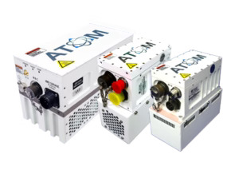
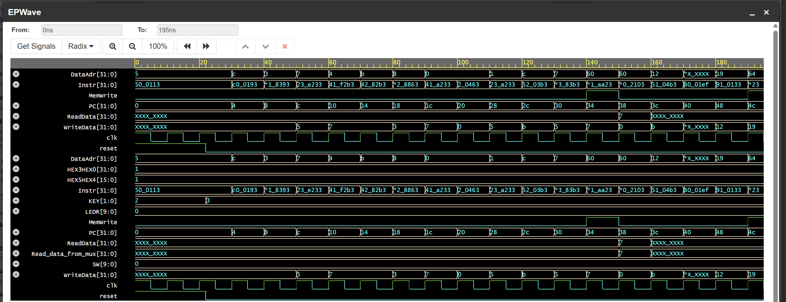
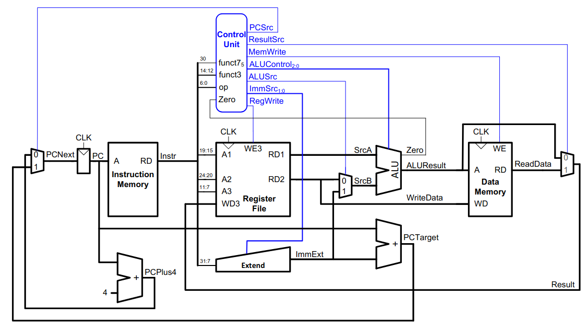
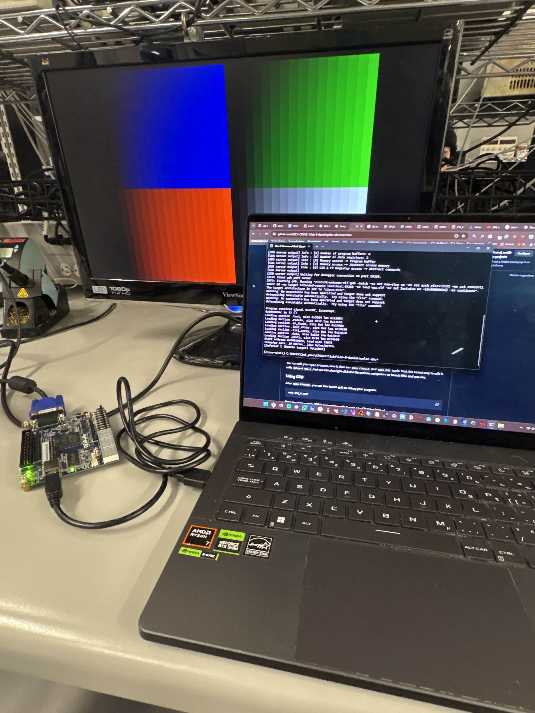
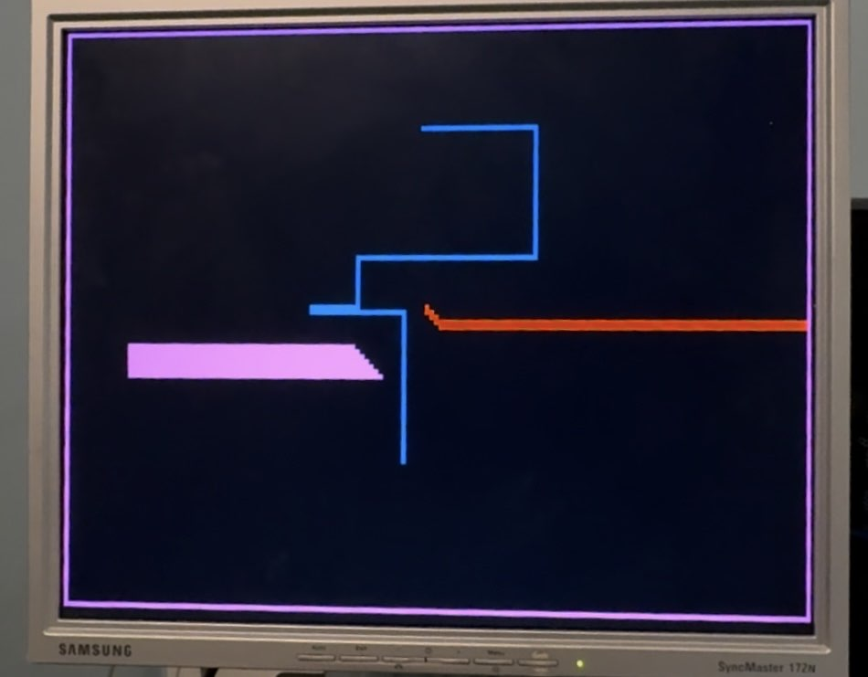
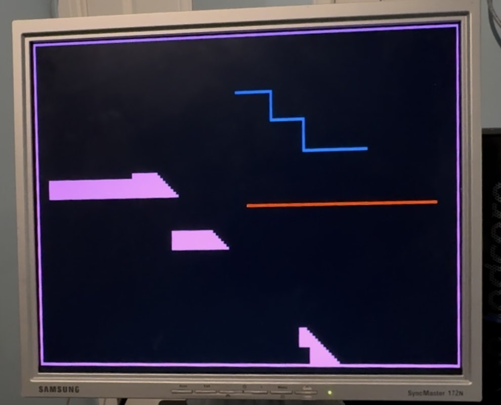

2nd Year Electrical Engineering @ UBC
Working at the hardware–software boundary: FPGA CPUs, embedded firmware, and system-level verification.
RF characterization and hardware testing for satellite communication systems

End-to-end development of 650 nm laser gate receivers with ESP32-S3 MCUs
GitHubReal-time settable clock using 16.6 MHz oscillator with timer-driven interrupts
GitHubHigh-precision temperature sensing with RS-232 telemetry and real-time visualization
GitHubSingle-cycle RISC-V processor with assertion-based verification on Altera FPGA
GitHub

Custom VGA driver with interrupt-driven controls and autonomous opponent AI
GitHub


Closed-loop thermal control using thermocouple feedback and PWM power regulation
Mobile robot with magnetic field detection and collision avoidance
Refining testbench development and researching UVM for professional-scale verification workflows.
Studying Clock Domain Crossing, PLLs, and TCL/Python automation for high-speed design.
Learning how our UBC Formula car communicates telemetry and ECU data over a single robust bus.
Comparing traditional GPU architectures with DSAs like TPUs for modern AI inference workloads.
Open to co-op opportunities starting May 2026. Let's have a coffee chat.